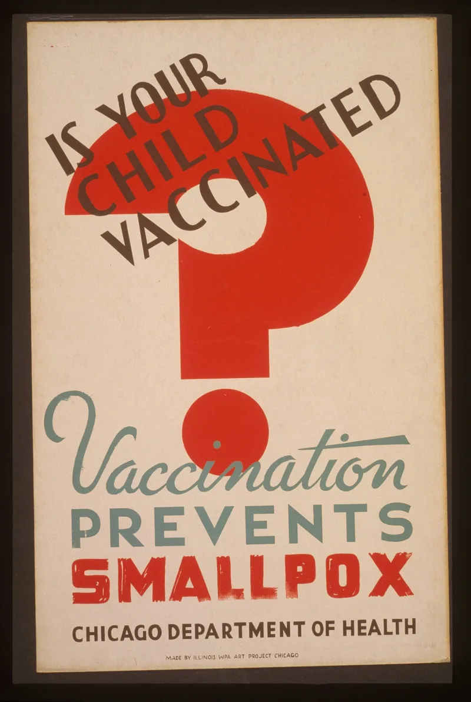
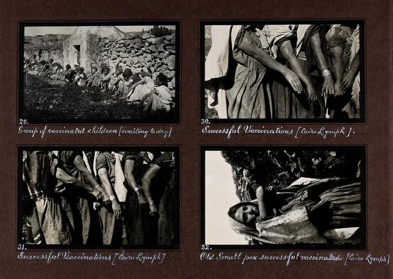
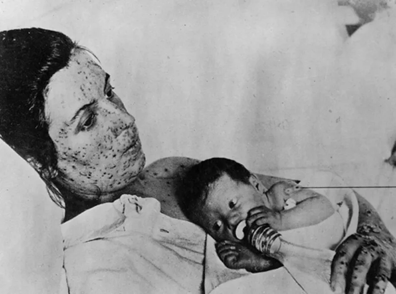

The Watchtower's own publications admit these facts. You can make this point from their library alone.
For about two decades, vaccines were called a sin. The Golden Age of February 4, 1931 (p.
293) said the practice was "a direct violation of the everlasting covenant that God made with Noah after the flood." An earlier issue, January 5, 1929 (p. 502), said it "never prevented anything and never will."
Witnesses refused vaccines for themselves and their children. This ran through the 1930s and the 1940s.
Some carried papers to get out of it. Some faced legal trouble.
They did it because they were told God forbade it.
The Watchtower of December 15, 1952 (p. 764) dropped the ban.
The choice became a personal one. The article added a candid line.
The Society could not afford to be drawn into the matter in law, or to take the blame for how a case turned out. Today jw.org backs vaccines.
The Golden Age was a general magazine. It carried the editorial views of its day, and fear of vaccines was common in the 1920s and 1930s.
It was not doctrine voted on by a governing body. Refusing was never grounds for expulsion.
The course was fixed decades ago. And they urged members to take the COVID-19 vaccine.
That is a body that follows the evidence.
They admit this themselves. The words and the 1952 reversal are theirs.
The editorial-opinion defense is partly fair, since the rule was never enforced like the blood policy. But the 1931 line rests the ban on the covenant with Noah.
That is a claim about God's law, in their own magazine. Keep it in proportion.
This one is history, and it has no victims today.
"In 1931 a vaccine broke God's covenant with Noah. In 1952 it was your own choice.
What happened in between?"



The Golden Age printed the views of its day, and jw.org now backs vaccines.
The Witness defense is that The Golden Age was a general magazine. It carried the views of its editors, in an age when fear of vaccines was common. That was the 1920s and 1930s. This was not doctrine voted on by a governing body.
Refusing a vaccine was never grounds for expulsion. The course was fixed decades ago. Today the organization urges members to be vaccinated, and it did so during COVID-19. That is a body that follows the evidence, inside the bounds of Scripture.
They admit it themselves. But 1931 rested the ban on God's covenant with Noah.
The quotes and the 1952 reversal are not in dispute, and both are in their own books.
The 'editorial opinion' defense is partly fair. The rule was never enforced like the later blood policy. But the 1931 line rests the ban on the covenant with Noah. That is a claim about God's law, made in their own official magazine.
Keep severity medium. This one is history, and it has no victims today. But it matters to the pattern.